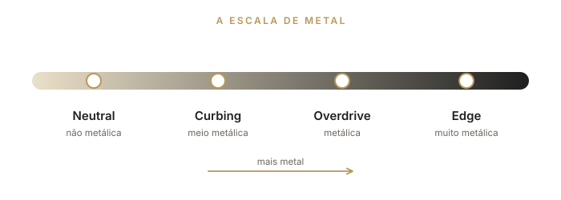
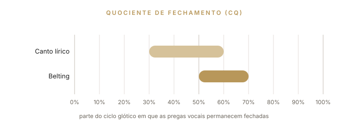
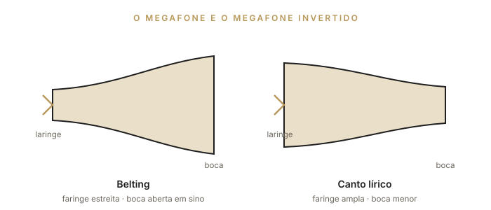

Parte IV
Funções vocais, cores do som, efeitos e belting: o repertório técnico do canto contemporâneo.
A voz pode ser organizada em quatro funções, ou modos vocais. As funções formam uma escala de “metal”, que vai do timbre menos metálico da voz até o mais metálico. Podemos dizer que essa escala é a “pedaleira” do cantor: você escolhe o perfil sonoro de acordo com a necessidade técnica, a preferência pessoal ou o estilo a ser cantado. As quatro funções vocais são Neutral, Curbing, Overdrive e Edge.
Cada função tem características específicas e diferenciadas. Entender as funções, suas características, vantagens e limites — e aprender a aplicá-las — é imprescindível para o cantor que queira usar todo o seu potencial vocal com segurança e qualidade, dar colorido ao canto e, principalmente, evitar problemas técnicos.

De onde vem o termo
A organização da voz em quatro modos — Neutral, Curbing, Overdrive e Edge —, assim como as noções de “cores do som” e de “efeitos”, foi sistematizada pela cantora e pesquisadora dinamarquesa Cathrine Sadolin no método Complete Vocal Technique (SADOLIN, 2012). Os nomes dos modos são mantidos em inglês, como no método original.
| Função | Metal | Timbre | Onde funciona melhor |
|---|---|---|---|
| Neutral | Não metálica | Suave, arredondado, aveludado | Todas as regiões; no agudo, soa impostado |
| Curbing | Meio metálica | Lamurioso, contido | Excelente na região média; “achatado” no agudo |
| Overdrive | Metálica | Gordo, denso, poderoso | Graves e médio-agudos; evitar na região média |
| Edge | Muito metálica | Pontudo, brilhante, afiado | Agudos; não recomendado nos médios e graves |
Para ouvir
Exemplos de Neutral: Emily Kokal e Ariana Grande.
Para ouvir
Exemplos de Curbing: Paula Fernandes e Beyoncé.
Para ouvir
Exemplos de Overdrive: Taya Smith e Beyoncé.
Para ouvir
Exemplos de Edge: Taylor Swift e Carrie Underwood.
Atenção
As funções mais metálicas (Overdrive e Edge) exigem domínio de apoio, contra apoio e twang. Pratique-as com orientação, por pouco tempo no início, e pare diante de qualquer desconforto. Os fundamentos dos Capítulos 2, 9 e 13 são pré-requisitos.
Você pode alterar todas as funções manipulando o timbre para obter cores mais claras ou mais escuras. Algumas funções podem ser mais alteradas que outras. As cores mudam por meio de modificações no trato vocal — o espaço logo acima das pregas vocais, que se estende até os lábios, incluindo a passagem nasal — e no controle do apoio e do contra apoio, pois a configuração das musculaturas torácica e abdominal influencia a configuração da musculatura da laringe (SADOLIN, 2012).
Cada cantor tem um corpo diferente; portanto, cada pessoa é única e atingirá cores de som e efeitos únicos. Conhecer essas possibilidades de alteração da cor da voz só será possível se você aprender a controlar cada um desses dispositivos físicos, para acioná-los enquanto canta e, assim, obter diferentes cores.
Efeitos são ruídos e pequenos ornamentos que podem ser acrescentados à voz ou ao fraseado para realçar a expressão ou o estilo do cantor. Como cada voz é única, todo efeito precisa ser construído especificamente para cada cantor, levando em conta sua anatomia, fisiologia, nível de energia e temperamento.
Antes de começar
Antes de trabalhar com efeitos, é importante ter sob controle os fundamentos da voz saudável (Partes I e II) e conhecer e dominar as funções e suas cores.
O belting faz parte do chamado Canto Comercial Contemporâneo Americano (CCCA), uma tradução livre de Contemporary Commercial Music (CCM). O termo inclui as técnicas norte-americanas de belting e speech-level singing e se aplica às técnicas associadas à música comercial americana — presentes no Brasil na música gospel e em outros segmentos do pop, e na técnica usada nas montagens brasileiras de musicais da Broadway. Essa abordagem é recente no Brasil, mas já ocupa lugar de destaque no ensino de canto, por seu forte apelo comercial.
Conhecer esse estilo é importante porque modelos vocais vindos dos Estados Unidos são frequentemente usados sem rigor ou treinamento em musicais, espetáculos e na música vocal brasileira, o que provoca inconsistência de timbre, problemas de saúde e perda de qualidade vocal.
Para entender a técnica do belt, é preciso primeiro definir registros, já que é uma área que pode provocar mal-entendidos. Segundo a definição clássica de Manuel Garcia (1847), registros são “uma série de tons consecutivos e homogêneos, do grave ao agudo, produzidos pelo mesmo princípio mecânico, e cuja natureza difere essencialmente de outra série de tons, igualmente consecutivos e homogêneos, produzida por outro princípio mecânico”.
O termo belting vem do verbo to belt out, que significa cantar de maneira forçada, gritada. Ainda há muita polêmica sobre o termo. O vocólogo Ingo Titze fala em “estilo de produção”, e não em técnica. LoVetri (2003, p. 211) afirma que é “apenas um rótulo dado a certo aspecto da função do registro de peito”. Hoje, o belting é reconhecido como um estilo ou técnica de cantar em voz mista (mix) com predominância do sub-registro de peito, geralmente na região mais aguda da voz. A descrição do timbre envolve muito brilho (ring), voz metálica (brassiness), twanginess — o timbre “ardido” ouvido nos cantores country — e dinâmica forte.
O belting apareceu na década de 1930, com cantoras como Ethel Merman, Celeste Holm e Judy Garland, como alternativa ao legit — o canto lírico da Broadway, com menos projeção e mais adequado ao microfone, mas com timbre e produção muito parecidos com os do lírico.
No musical Oklahoma!, o belting se fortaleceu como timbre de personagens caricatos ou de números de comédia. Desde então, tem gerado controvérsia entre os professores de canto. Cornelius Reid, um dos maiores pedagogos dos anos 1960, o criticava como a “prática de cantores pop de cantar até os limites do registro de peito”.
O belt típico dos anos 1940 pode ser ouvido na voz de Judy Garland: uma voz de peito pesada, que não chegava muito acima do C4 e às vezes quebrava no A3. Tinha como características o esforço contínuo, o estresse e, muitas vezes, a aposentadoria precoce.
O belt de hoje apresenta mais liberdade na produção sonora, menos esforço, pouco vibrato e som brilhante (frontal), sem a sensação de precariedade ou fragilidade de antes. O timbre é definido predominantemente pela atuação do músculo tireoaritenóideo (TA), em uma voz mista dominada pelo TA (chest mix), que pode chegar ao G4 nas cantoras high belters.
A relação entre canto e fala na música da Broadway é intrínseca ao gênero. Professores e diretores sempre lembram que se trata de teatro musical: a palavra, o texto, vem primeiro. A voz serve ao texto. O belting nasce da necessidade de cantar para grandes plateias, sem microfone, com articulação próxima à da fala, numa região próxima à do call — o chamado forte, quase gritado, o “hey!”.
Por isso, a música é escrita na região da fala (com exceção do legit, que segue mais as regras do canto lírico). Quando a melodia se afasta um pouco da região da fala, o belting se torna ainda mais importante, porque preserva a articulação e a emissão mais naturais da fala. É sempre essencial que o texto seja entendido de primeira (SCHUTTE; MILLER, 1993, p. 142), e o som resultante tem de parecer natural — a voz coberta ou escura é descartada. O belting equivale a um “discurso veemente” (SPIVEY, 2008).
O belting tem características próprias tanto na fonte (a fonação) quanto no filtro (o trato vocal). Na fonte, o quociente de fechamento das pregas vocais (CQ) no canto lírico fica geralmente entre 30% e 60% (em tenores). No belt, fica entre 50% e 70% em média, para todos os tipos de voz (WELLS, 2006, p. 69) — o que evidencia maior tensão na fonação, pressão subglótica mais alta, níveis de pressão sonora mais altos, mais tensão na musculatura extrínseca e maior adução das pregas vocais.

Ainda assim, mesmo com a importância do ajuste fonatório, o principal componente do belt é o ajuste do trato vocal (LOVETRI, 2003), conseguido de maneira intuitiva por um processo chamado formant tuning (sintonia de formante). O belting se caracteriza também por laringe levemente alta, faringe mais estreita (POPEIL, 2012), twang (pregas ariepiglóticas estreitas) e encurtamento do trato vocal, o que resulta em som mais brilhante.
A boca geralmente fica em forma de sino — um megafone —, com a mandíbula bem aberta, ao contrário do canto clássico, que se caracteriza por um megafone invertido (TITZE; WORLEY; STORY, 2011). Entre o C4 e o E4, as cantoras líricas reduzem a abertura da boca; as belters fazem o oposto. Só depois da passagem, já em voz de cabeça, as cantoras clássicas abrem mais a boca.

Para observar
Assista a apresentações de Idina Menzel em belting: é possível perceber a boca em forma de sino e a mandíbula bem aberta.
Para o cantor brasileiro, talvez seja mais fácil aprender belting tendo a base do canto erudito, pois o canto popular urbano brasileiro é muito diferente do belting. Cantar em belt exige grande resistência física e muscular, alto controle respiratório e consciência dos ajustes do trato vocal e da fonação.
Há muitos subestilos de belting, e diferentes professores seguem classificações diferentes. O pesquisador Johan Sundberg propõe a seguinte: heavy (pesado), brassy (metálico), ringy (brilhante), nasal e speechlike (próximo da fala). Outros subestilos, ligados a musicais ou repertórios, incluem Old Disney, New Disney, rock-belt (como no musical Rent), soul-belt, pop-belt e muitos outros. Esses subestilos ainda são bastante personalistas, e há um longo caminho até uma classificação definitiva.
A partir da década de 2000, outra manifestação cultural tipicamente americana, o teatro musical da Broadway, alcançou grande sucesso no Brasil, quando espetáculos importados e vertidos para o português começaram a ser produzidos. Esses espetáculos têm como característica, assim como o gospel, a valorização do virtuosismo vocal, deixando pouco espaço para a fala coloquial. Muitos deles, como Les Misérables (2001) e A Bela e a Fera (2002), são franquias americanas que, por exigência contratual, preveem grande fidelidade aos originais. Se, por um lado, estimularam as produções a um nível de profissionalismo até então desconhecido, por outro impuseram um “pacote” com “todas as coreografias, arranjos, cenários, figurinos, divisão de vozes. (...) Nestes espetáculos nada ou quase nada parece ser criado. Muito menos improvisado” (VENEZIANO, 2008, p. 2-3).
A demanda por atores-cantores criada por esses espetáculos estimulou a procura pelo estudo do belting. Muitos professores brasileiros se especializaram nesse tipo de canto, alguns importando integralmente os procedimentos das escolas americanas — inclusive habilitando-se a reproduzir métodos comercialmente franqueados —, enquanto outros adaptaram esses conhecimentos e desenvolveram métodos próprios (MARIZ, 2013). Como, no belting, os padrões articulatórios e ressonantais levam a uma emissão que tende à sonoridade do inglês norte-americano mesmo quando cantada em português, a técnica precisa de adaptações para ser usada no Brasil — o que muitas vezes não acontece (ELME; FERNANDES, 2014).
Observa-se também, em programas de televisão, uma tendência à padronização da performance vocal dos cantores populares brasileiros. O sucesso de programas americanos de calouros, como American Idol e The Voice, refletiu-se no Brasil com a importação dessas franquias, rebatizadas como Ídolos e The Voice Brasil, nas quais se reproduz não apenas o formato, mas também a valorização de uma estética padronizada, baseada no canto pop norte-americano — principalmente o associado ao gospel, em que sobressaem os melismas (ELME; FERNANDES, 2014).
A técnica da MPB não tem relação com o belting. Uma canção para ser cantada “ao pé do ouvido”, como a bossa nova, com a máxima aproximação do microfone, não tem características de sopro nem de timbre relacionadas à ópera ou ao teatro musical. Como qualquer técnica vocal, o belting deve ser adaptado às características do idioma — o que demanda tempo e estudo — e, quando utilizado na canção brasileira, precisa ser reavaliado. Ao mesmo tempo, tornam-se urgentes iniciativas que ajudem a valorizar e a reinserir no cotidiano brasileiro o legado cultural deixado pelos cancionistas e cantores populares.